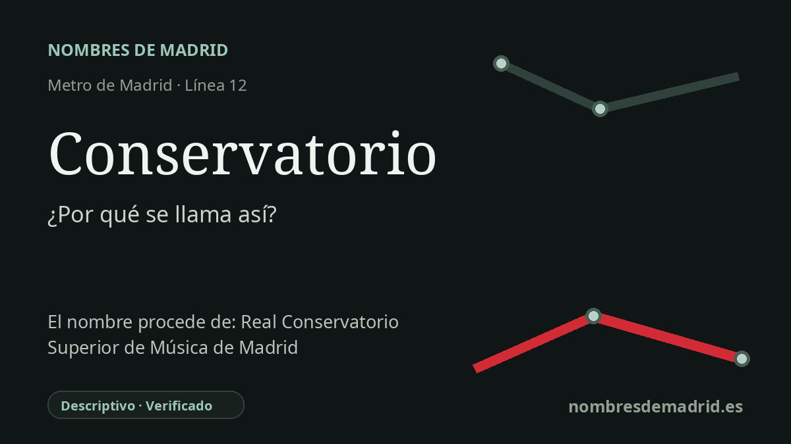

Publicado el · Investigación de Nombres de Madrid · Cómo verificamos cada origen · 6 fuentes consultadas
Respuesta rápida
Conservatorio toma su nombre del Conservatorio Profesional de Musica de Getafe, el centro publico de ensenanzas musicales situado junto al entorno de la estacion en la avenida de las Arcas del Agua. La parada se inauguro con Metrosur el 11 de abril de 2003.
La historia del nombre
Conservatorio tiene uno de los nombres mas transparentes de Metrosur: senala un centro publico de ensenanza musical cercano, el Conservatorio Profesional de Musica de Getafe. La estacion no toma su nombre del historico Real Conservatorio Superior de Musica de Madrid, sino del conservatorio profesional getafense situado en su entorno inmediato.
La institucion que explica el nombre se encuentra en la avenida de las Arcas del Agua, 1. La Comunidad de Madrid la describe como un centro publico de ensenanza musical integrado en su red regional, y en su informacion practica cita la estacion de Metrosur "Conservatorio" como acceso en metro. El acceso de la estacion se situa muy cerca, en la avenida de las Arcas del Agua junto a la Senda de Mafalda.
La cronologia es breve y clara. El conservatorio fue inaugurado en el ano 2000, y su denominacion oficial actual, Conservatorio Profesional de Musica de Getafe, quedo establecida por el Decreto 42/2001, de 22 de marzo, publicado en el boletin regional el 29 de marzo de 2001. Metrosur abrio despues, el 11 de abril de 2003, llevando la linea 12 a Getafe y a otros grandes municipios del sur madrileno.
El nombre tambien resume una pequena historia urbana del Sector III. En el entorno de la estacion, los planos de transporte senalan, ademas del conservatorio, equipamientos civicos, educativos y culturales como la biblioteca municipal Jorge Luis Borges y el Centro de Poesia Jose Hierro. Por eso el nombre funciona como hito practico: identifica una institucion cultural publica, no una persona historica ni un toponimo antiguo.
La evidencia del origen es solida porque las paginas oficiales de transporte y educacion coinciden: la pagina regional de la linea 12 situa la estacion cerca del conservatorio, la pagina educativa nombra el centro y da la estacion como acceso de Metrosur, y la ficha del CRTM fija la ubicacion de la estacion. La correccion principal es retirar el Real Conservatorio Superior de Musica de Madrid de la explicación, ya que es una institucion distinta y no es el origen del nombre de esta parada.